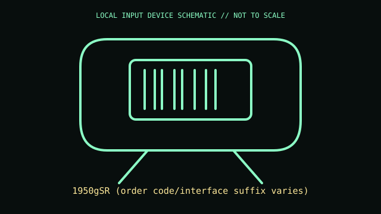

[ IMAGING AND AUDIO-CAPTURE PERIPHERALS // IDENTIFIED COMPONENT ]
Honeywell Xenon XP 1950gSR Scanner
Corded handheld 2D area imager for linear and stacked barcode capture at point of sale.

MODEL IDENTIFICATION: 1950gSR (order code/interface suffix varies). Confirm complete SKU, package, region, and revision before compatibility claims.
Model specifications
| Catalog leaf | Imaging and audio-capture peripherals |
|---|---|
| Exact model / identifier | 1950gSR (order code/interface suffix varies) |
| Physical mechanism and primary specifications | Xenon XP 1950g standard-range area imager; reads 1D/2D symbologies; USB, serial, or keyboard wedge via interface cable; trigger/manual and presentation-style operation. |
| Compatibility and interface caveats | 1950gSR is standard-range corded model; 1950gHD and cordless 1952g variants are different. Host mode is selected using cable and programming barcodes; check full order number. |
| Revision identification | Record full product label, software/firmware version, and supplied accessories. Product-family versions may differ in connector, protocol, features, or host requirements. |
Preservation and service
Clean optical window with approved cloth; retain the interface cable and configuration guide and avoid pulling at cable strain relief.
Record condition and test setup separately from vendor specifications, including host OS and software.
Primary manufacturer sources
- Honeywell Xenon XP 1950g productManufacturer documentation; confirm exact PID, regional suffix, and hardware revision on the unit.
- Honeywell scanner supportManufacturer documentation; confirm exact PID, regional suffix, and hardware revision on the unit.
Retain relevant manual revisions with the equipment record; vendor support pages can change.